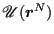

Next: Class-I Potentials Up: CHE T580: Modern Molecular Previous: Implementation and Evaluation
The modeling of molecular structure and inter/intra-molecular interactions is the job of the potential energy function . Modern potential energy functions are actively maintained and carefully curated and optimized by several devoted groups around the world, and for the most part they are made freely available to the research community. In this section, we'll consider a few of the more popular potentials out there. There are many good reviews out there about all-atom potential energy functions; most of what I present here is adapted from the recent review by Harrison et al. [17]
First, a note on terminology. A potential energy function, or just “potential”, is conceptually just a function that can compute potential energy from all atomic positions. Pairwise Lennard-Jones is an example we have used extensively already. When used specifically by MD simulations, potentials are often referred to as “force-fields”, since it is really their gradients that are used in MD; potential energy itself is more of a diagnostic in most standard MD simulations (though it is extremely important in some advanced free-energy methods). Because of this, potentials that are used in MD simulations have to be differentiable, for the most part. (There are a few MD methods that can use so-called “discontinuous forces” but no large-scale MD codes can.)
Second, a note on physical reality vs what potentials actually model. Interactions among atoms are quantum-mechanical in nature. Modeling them accurately involves in-depth quantum chemical calculations that can be very expensive. Potentials used in most molecular simulations are empirical functions that generally only very roughly approximate true interatomic interactions. Nuclei are treated as point masses and electrons aren't treated at all. Because of this simplification, empirical potentials always have parameters that must be tuned against more accurate quantum chemical calculations and experimental observations. Parameter tuning in potentials leads to specialization that reflects where such potentials are most in demand. This will become evident as we start discussing important examples.